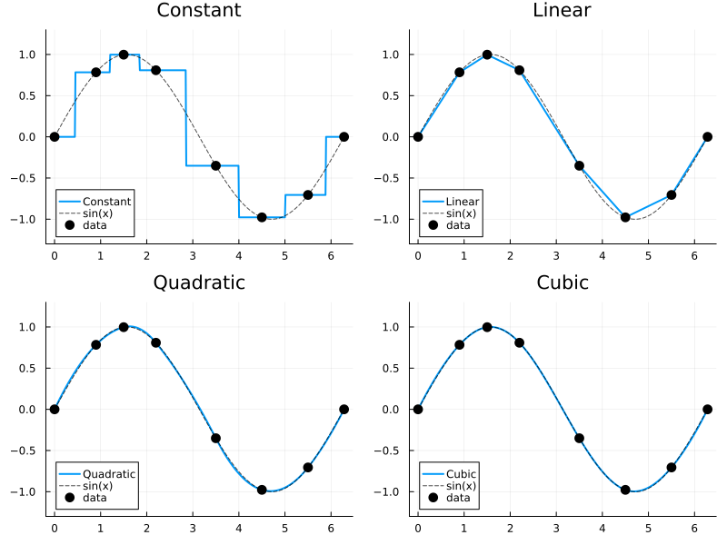
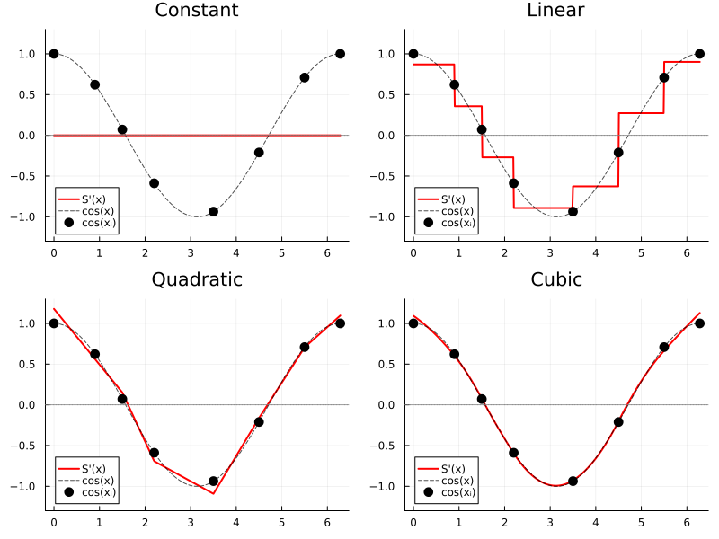
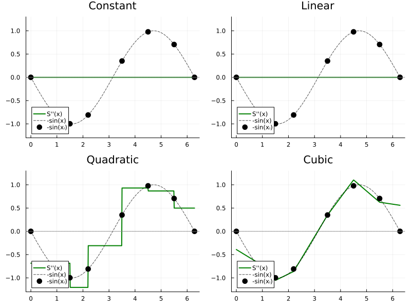

Visual Comparison
All examples use the same sparse, non-uniform grid interpolating sin(x):
using FastInterpolations
x = [0.0, 0.9, 1.5, 2.2, 3.5, 4.5, 5.5, 2π] # 8 non-uniform points
y = sin.(x)
xq = range(0, 2π, 500) # query points0.0:0.012591553721802777:6.283185307179586Value: $S(x)$
constant_interp(x, y, xq) # step function
linear_interp(x, y, xq) # piecewise linear
quadratic_interp(x, y, xq) # C¹ smooth
cubic_interp(x, y, xq) # C² smooth
First Derivative: $\frac{dS}{dx}$
constant_interp(x, y, xq; deriv=DerivOp(1)) # always 0
linear_interp(x, y, xq; deriv=DerivOp(1)) # piecewise constant
quadratic_interp(x, y, xq; deriv=DerivOp(1)) # continuous
cubic_interp(x, y, xq; deriv=DerivOp(1)) # smooth
Second Derivative: $\frac{d^2S}{dx^2}$
constant_interp(x, y, xq; deriv=DerivOp(2)) # always 0
linear_interp(x, y, xq; deriv=DerivOp(2)) # always 0
quadratic_interp(x, y, xq; deriv=DerivOp(2)) # piecewise constant
cubic_interp(x, y, xq; deriv=DerivOp(2)) # continuous
Summary
| Method | Value | 1st Derivative | 2nd Derivative |
|---|---|---|---|
| Constant | Step function | Always 0 | Always 0 |
| Linear | Piecewise linear | Piecewise constant | Always 0 |
| Quadratic | C¹ smooth | Continuous | Piecewise constant |
| Cubic | C² smooth | Continuous | Continuous |
- Speed priority: Linear (simplest, fastest)
- Smooth curves: Cubic (C² continuity)
- Balance: Quadratic (C¹, simpler BC than cubic)
- Discrete states: Constant (preserves steps)
See Also
- Derivatives: Detailed derivative API documentation
- Constant | Linear | Quadratic | Cubic